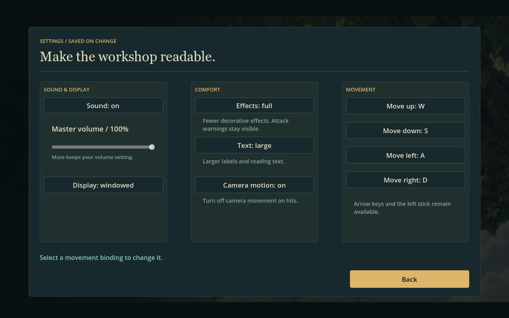

Native game renderer captures. Five illustrated manual pages, grouped preferences with a working volume slider, and a pause summary. Normal and large text at 1280×800; an additional Settings capture at 1920×1080. The run remains paused throughout.
SETTINGS LARGE

Existing artwork is reused. The Saint is unchanged. Automated input and rendering checks do not replace a physical controller session or uncoached playtest.